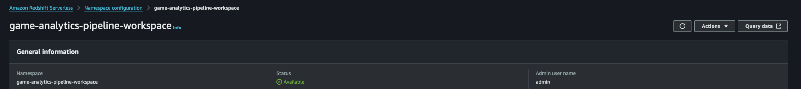

Getting Started¶
This guide is intended for users integrating game analytics pipeline for the first time. If you have an existing Game Analytics Pipeline deployment and need to upgrade to the latest version, see the Upgrading page.
Prerequisites¶
The following resources are required to install, configure, and deploy the game analytics pipeline.
- Amazon Web Services Account
- GitHub Account
- Visual Studio Code*
- API Client: Postman Desktop or Bruno
- IAM Users + Credentials
- IAM User for deploying the guidance Infrastructure-as-Code resources
- IAM User with AWS Console access
- IAM User for administrating the API, requires credentials (Access Key, Secret Access Key)
Info
When using Access Keys and Secret Access Keys, a best practice is to periodically rotate them. This means your administrators and deployments will need to keep the rotation of your keys in mind as well, more information here
*Other code editors can also be used, but tooling support may be limited
Installation¶
-
Log into your GitHub account, and navigate to the the Game Analytics Pipeline repository
-
Fork into your GitHub account
-
From your fork, clone your repository to a local folder on your machine
-
Navigate to the root of the local folder and open the project in your code editor
Set up Environment¶
A development container configuration contains the necessary Python, NodeJS, and the AWS CDK installations and versions needed to implement this guidance, which saves time installing manually. It is recommended, that you use the pre-configured environment as your development environment.
To use Dev Containers, a container platform such as Docker Desktop (local) or Finch must be installed and running.
Install the Dev Container Extension for VSCode¶
-
Navigate to the Dev Containers extension page in the Visual Studio Marketplace
-
Click Install to add the extension to VSCode
*Other code editors such as the Jetbrains suite also support Dev Containers.
(Optional) Configure VSCode to use Finch¶
Finch is an open source client for container development. To use Finch, follow the instructions in the Finch documentation to install and initialize Finch for your chosen operating system.
After Finch is installed and running, follow the instructions in the Finch documentation to configure the Dev Container Extension to utilize Finch as the container platform to run the dev container for your chosen operating system.
Using the Dev Container¶
After following the instructions in Installation, when the project is opened in your code editor, a popup will appear indicating that the folder contains a dev container configuration. To utilize the Dev Container environment, click on “Reopen in Container”.
Before deploying the sample code, ensure that the following required tools have been installed:
- Docker Desktop (local) or Finch
- Apache Maven
- AWS Cloud Development Kit (CDK) 2.92 or Terraform
- Python >=3.8
- NodeJS >= 22.0.0
If Finch is installed, set the CDK_DOCKER environment variable to finch
CDK_DOCKER="finch"
This can also be added to the ~/.bashrc file to be configured for every interactive shell. If you are using mac, replace ~/.bashrc with ~/.zshrc
echo 'CDK_DOCKER="finch"' >> ~/.bashrc
Warning
The NPM commands to build and deploy the project are written to use UNIX shell commands. Because of this, the manual install is incompatible with the Windows Powershell without modifications to the NPM commands. Please consider using the Dev Container to have a consistent deployment environment.
Configuration¶
The Game Analytics Pipeline can be deployed using AWS Cloud Development Kit (CDK) or Terraform.
-
To select your deployment option, open the
package.jsonfile at the root of the repository. -
At the top of the
package.jsonfile there is a"config"block. Set the"iac"config option to"cdk"to use the CDK deployment option or"tf"to use the Terraform deployment option."config": { "iac": "cdk" | "tf" },Warning
Avoid changing this option after the stack is deployed without first destroying the created resources.
-
Before deploying the sample code, deployment parameters need to be customized to suite your specific usage requirements. Guidance configuration, and customization, is managed using a
config.yamlfile, located in the infrastructure folder of the repository. -
A configuration template file, called
config.yaml.TEMPLATEhas been provided as a reference for use case customizations. Using the provided devcontainer environment, run the following command to copy the template to./infrastructure/config.yaml:cp ./infrastructure/config.yaml.TEMPLATE ./infrastructure/config.yaml -
Open the
./infrastructure/config.yamlfile for editing. Configure the parameters for the pipeline according to the options available in the Config Reference. -
Terraform Only - Terraform does not use a default region like CDK does, and needs to specify the region in the providers file (
./infrastructure/terraform/src/providers.tf). It is defaulted tous-east-1but please modify the below section on the file to your desired region code:provider "aws" { region = "REGION" }
CDK Only - Configuring ESBuild¶
This repository utilizes L2 constructs for Nodejs based lambda functions. These constructs handle the bundling of lambda code for deployment. By default, the construct will utilize a Docker container to compile the function, however, this option leads to high build times before each deployment and can have increased performance impacts on MacOS and docker-in-docker enviornments. If esbuild is installed, the L2 construct will build the function using esbuild instead which leads to faster build times.
To install esbuild, navigate to the root of the repository and enter the following command:
npm install .
esbuild is listed as a development dependency under package.json and will be installed.
AWS CLI Configuration¶
The AWS CLI must be properly configured with credentials to your AWS account before use. The aws configure or aws configure sso commands in your development enviornment terminal are the fastest way to set up your AWS CLI depending on your credential method. Based on the credential method you prefer, the AWS CLI prompts you for the relevant information.
More information about the aws configure command can be found in the documentation for the AWS Command Line Interface.
Deployment¶
Info
Security credentials for the target AWS account must be configured on the machine before deploying the pipeline. This lets AWS know who you are and what permissions you have to deploy the pipeline. These credentials must have permissions to create new resources within the account, including new IAM Roles.
There are different ways in which you can configure programmatic access to AWS resources, depending on the environment and the AWS access available to you. Please consult the following documentation based on your deployment option to configure the credentials before proceeding with this section.
Once you have set your own custom configuration settings, and saved the config.yaml file, then following steps can be used to deploy the game analytics pipeline:
- Build the sample code dependencies, by running the following command:
npm run build - Bootstrap the sample code by running the following command:
npm run deploy.bootstrap - Deploy the sample code, by running the following command:
After deployment is complete, a list of outputs will be posted to the terminal. These are names and references to relevant deployed assets from the stack. Please note these for future reference.
npm run deploy
Start initial Application and API¶
Before sending events to the pipeline, an Application and corresponding Authorization key will need to be created. A Postman collection file is provided to help configure Postman or Bruno for use with the solution.
- Locate the API Endpoint from the output after deployment. Note this down for the collection
- If deployed using CDK, this endpoint is the value of
CentralizedGameAnalytics.ApiEndpoint. - If deployed using Terraform, this endpoint is the value of
api_endpoint
- If deployed using CDK, this endpoint is the value of
- The collection file is located at
/resources/game-analytics-pipeline-postman-collection.json
- For instructions on how to import a collection, refer to the documentation for your selected API Client: Import Postman data
- Once the collection is imported into Postman, create a new environment by selecting Environments in the sidebar and select the Add icon. You can also select the environment selector at the top right of the workbench and select Add icon. Enter a name for your new environment.
- In order to perform administrator actions on your API, Authentication must be configured to utilize SigV4 authentication for an IAM identity. These credentials inherit from your
access_keyandsecret_access_keyvariables configured in the collection. For more information, refer to Authenticate with AWS Signature authentication workflow in Postman - Replicate the following image for your environment (Note: leave
application_idblank. This will be filled in later):- The AWS Access Key and Secret Access Key is specifically for administrating the API only, and should not be used by event sources. You should have an IAM User specifically with these credentials with sufficient permissions to run the tasks on the API, but for security best practice to use least privilege, a sample policy is created by the guidance
{WORKLOAD_NAME}-AdminAPIAccessto attach to the user to perform only the admin tasks
- The AWS Access Key and Secret Access Key is specifically for administrating the API only, and should not be used by event sources. You should have an IAM User specifically with these credentials with sufficient permissions to run the tasks on the API, but for security best practice to use least privilege, a sample policy is created by the guidance
- Ensure there are no trailing return/enter spaces at the end of the variables, and click "Save" on the top right.
- Select your newly created and saved environment by navigating to the top right drop-down menu that says
No environment, selecting on it and selecting your new environment
- For instructions on how to import a collection, refer to the documentation for your selected API Client: Importing Enviornment into Bruno
- Once the collection is imported into your API client, navigate to the Vars tab for the collection.
- Validate that five variables (
api_base_path,application_id,access_key,secret_access_key, andregion) are under Pre Request variables. If they are not, create variables with those names. - Configure the collection-wide
api_base_pathvariable to be your deployed API base path. The value of the path should be the URL retrieved from step 1. - Configure
regionto be the region where the stack is deployed - Configure
access_keyto be the access key of the identity used to deploy the stack - Configure
secret_access_keyto be the secret access key of the identity used to deploy the stack - Leave
application_idblank. This will be filled in later.
- Validate that five variables (
-
Ensure the collection variables are created
-
In order to perform administrator actions on your API, Authentication must be configured to utilize SigV4 authentication for an IAM identity. These credentials inherit from your
access_keyandsecret_access_keyvariables configured in the collection. For more information, refer to Authenticate using AWS Signature- If a session token is needed for temporary credentials, please add them manually
- Ensure there are no trailing return/enter spaces at the end of the variables. Save the configuration by pressing
ctrl + s(orcmd + son mac).
After the pipeline is deployed, a new application must be created using the Application API.
Create a new Application¶
The Game Analytics Pipeline Guidance is built to support multiple games, called Applications in the guidance, for cross-game and per-game analytics. This means usually you would only need to deploy a single pipeline per environment.
- Navigate under the Applications tab of the collection and select the Create Application API.
- Navigate to the
Bodytab (under the address bar showing the API path) and modify the value of Name and Description in the json to match your game. - Send the API request. Note the value of the
"ApplicationId"in the API response. - Copy the value of the ApplicationId and paste it in to the
application_idvalue for the collection. This will allow the rest of your API calls to interact with the application
Note
Refer to the API Reference for POST - Create Application for more information on how to register a new application.
After the application is created, create an API key to send events to the API. Make sure to go back to Postman or Bruno if you are using them to update the environment variables (and save).
Create a new API Key¶
- Navigate under the Authorizations tab of the collection and select the Create Authorization API.
- The
"ApplicationId"from the previous step should be passed in the API path automatically. - Navigate to the
Bodytab (under the address bar showing the API path) and modify the value of Name and Description in the json to match your game. - Send the API request. Note the value of the
"ApiKeyValue"in the API response. - Refer to the API Reference for POST - Create API Key for Application for more information on how to create a new authorization key.
If you have Redshift Mode enabled, enable the materialized views and remaining infrastructure through the API. Refer to the API Reference for POST - Setup Redshift on how to setup the final Redshift components.
Apache Iceberg Only - Configure Table Partition Spec¶
If the ENABLE_APACHE_ICEBERG_SUPPORT configuration is set to true, a basic Apache Iceberg table is created in the glue catalog with the table name specified with RAW_EVENTS_TABLE under the database specified with EVENTS_DATABASE.
By default, this table does not contain a configured partition specification. To enable partitioning, a Glue job must be run before data is ingested to configure the table.
- Locate the Iceberg Setup Job Name from the deployment outputs. Note this down for later.
- The name of the job is the value of
CentralizedGameAnalytics.IcebergSetupJobNamewhen using CDK. - The name of the job is the value of
iceberg_setup_job_namewhen using Terraform.
- The name of the job is the value of
- Navigate to the Glue AWS Console. Ensure that you are in the same region that the stack is deployed in
- On the left sidebar, navigate to ETL jobs
- Locate the deployed setup job with the name retrieved from Step 1 in the list of jobs. Use the search bar if necessary
- Click on the checkbox to the left of the name of the job.
- Click on Run job at the top right of the job list to start the job.
- Navigate to the job run status using the popup at the top of the page. Monitor the status until the job is complete and successful.
Real Time Only - Starting Flink¶
If the REAL_TIME_ANALYTICS configuration is set to true, a Flink Application will be created. This application needs to be in the RUNNING state for incoming events to be processed in real time.
-
Locate the Flink App Name from the deployment outputs. Note this down for later.
- The name of the job is the value of
CentralizedGameAnalytics.FlinkAppNamewhen using CDK. - The name of the job is the value of
flink_app_namewhen using Terraform.
- The name of the job is the value of
-
Navigate to the AWS Console. Open the console for Managed Apache Flink
-
Click on the Apache Flink applications page on the side menu.
-
Navigate to the application with the name matching the one retrieved from the step 1 output.
-
Click on the Run button at the top right of the menu. Configure the Snapshots option to Run without snapshot when starting for the first time. Click on the Run button again to start the application.
-
Wait for the Status to show as Running
For more information and troubleshooting, refer to the documentation for Run a Managed Service for Apache Flink application.
Send Events to the Pipeline¶
This project contains a python script to send a simulated stream of events to the pipeline. The script is located at resources/publish-data/handler.py. To run the script, run the following
python resources/publish-data/handler.py --api-path <API_PATH> --api-key <API_KEY> --application-id <APPLICATION_ID>
- Replace
<API_PATH>with the value of the API endpoint retrieved after deployment during step 1 of Start initial Application and API - Replace
<APPLICATION_ID>with the value of"ApplicationId"created during the Create a new Application step. - Replace
<API_KEY>with the value of"ApiKeyValue"created during the Create a new API Key step.
For more information, refer to the API Reference for POST - Send Events for the REST API schema to send events to the pipeline.
Verify and Query Event Data¶
-
Navigate to the AWS Console for Athena
-
If you are not already on the query editor, click on the Launch query editor button
-
At the top left of the editor, select the workgroup for your stack. The name should consist of the name specified by
WORKLOAD_NAMEin config.yaml followed by the suffix-workgroupand a random suffix. -
Acknowledge the settings for the workgroup
-
On the left hand side, select the Database with the name specified by
EVENTS_DATABASEin config.yaml -
A list of tables should appear below the selection. Select a table, click the three buttons on the left, and select At to see the items in the table.
-
To use the pre-defined queries, select Saved queries at the top toolbar of the query editor. This will show a list of queries created for the stack.
-
To run a query, click on the highlighted ID of the query to open it in a new query editor tab and then press Run for the query. View the results below after the query finishes executing.
-
In the AWS Console, navigate to Redshift and you will see the Serverless Dashboard.
-
Select your namespace and then press the Query Editor button in the top right.

-
In the Query Editor, you will see your namespace in the top left.
-
Select the ... to the right of the name to create a connection. Choose Secrets Manager and the relevant secret.
-
Navigate to
native databases / events / Views -
Double click one of the views to automatically open a query in the editor on the right side. Edit the query and press Run when ready.
-
The view event_data is the materialized view which reads directly from the Kinesis Data Stream. The other views are essentially pre-made queries against the event_data materialized view.
If REAL_TIME_ANALYTICS is set to true, an OpenSearch Serverless collection will be created to store and index the time series metrics emitted by the Managed Service for Apache Flink application that is initiated in the Starting Flink step.
An acccompanying OpenSearch UI Application is created to query and visualize the data emitted by real time analytics. To access this application, ensure you are logged in to the AWS console in your browser of choice with the created OpenSearch Admin IAM role.
- Ensure you are logged in to the AWS console with an existing administrator IAM role. This account must have the
sts:AssumeRolepermission to switch roles. - Locate the OpenSearch Admin Assume Link to assume the IAM role from the output of the deployed stack.
- If deployed using CDK, this output is identified by
CentralizedGameAnalytics.OpenSearchAdminAssumeLink. - If deployed using Terraform, this output is identified by
opensearch_admin_assume_link
- If deployed using CDK, this output is identified by
- Paste the link into your browser of choice, confirm the details are correct, and click Switch Role to assume the admin role. The assumed role should have the name of your configured
PROJECT_NAMEfollowed by-OpenSearchAdmin. - Verify that you have assumed the admin IAM role by checking the role at the top right of the AWS console.
- Locate the OpenSearch Dashboard Link to the OpenSearch application from the output of the deployed stack.
- If deployed using CDK, this output is identified by
CentralizedGameAnalytics.OpenSearchDashboardLink. - If deployed using Terraform, this output is identified by
opensearch_dashboard_link
- If deployed using CDK, this output is identified by
- Paste the link into your browser of choice. Ensure that you are logged in to the AWS console as the OpenSearch Admin before proceeding.
- On the main dashboard page, verify that you are logged in as the OpenSearch Admin by clicking on the "a" icon on the bottom right and viewing the associated role.
- On the main dashboard page, click on Create workspace under Essentials
- On the next page, provide a name and description to the workspace
- Under Associate data sources, click Associate OpenSearch data sources
- Select the Game Analytics Pipeline Metric Collection and click Associate data sources
- If needed, change the visibility of the workspace in the last section
- Click Create workspace
- On the left side, select Index patterns and click Create index pattern
- Select the associated data source and click Next
- In the field for Index pattern name, enter
game_metrics* - Create the index pattern and verify the fields of the index
- View the raw data stored in the index by navigating to the Discover tab on the left. If there is no data shown, adjust the time window using the control at the top right.
Using the created game_metrics index pattern you can create time series visualizations of the real-time metrics.